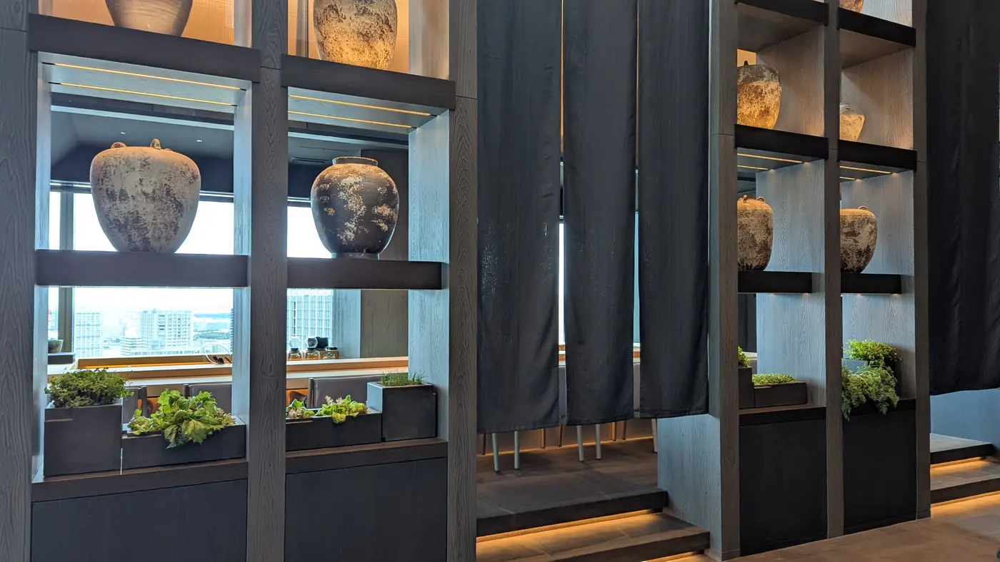

Create a memorable urban farming experience for guests and kitchens.
Rooftop, terrace, and hospitality concepts.

Overview
An urban farm on your rooftop, terrace, or in your lobby gives guests an experience they will photograph, talk about, and remember. For your kitchen, it means the freshest possible ingredients sourced from your own building. We work with hotels to design installations that serve both the guest experience and the culinary team — from rooftop farms that double as event spaces to compact setups in visible common areas.
Possible formats
A rooftop tower farm with optional guest-tour or workshop programming. Lobby or terrace installations as a visual sustainability statement. Kitchen-adjacent growing for chef-driven harvests. Seasonal guest experiences tied to harvest events or farm-to-table dining.
Consultation
We begin with a site visit and discussion with your operations and culinary teams. Our proposal covers system design, planting plan, maintenance schedule, and any guest-facing programming you would like to include. We handle installation and ongoing care.